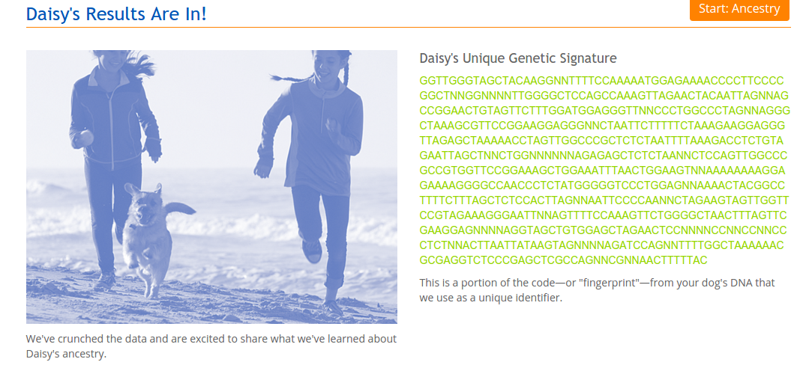
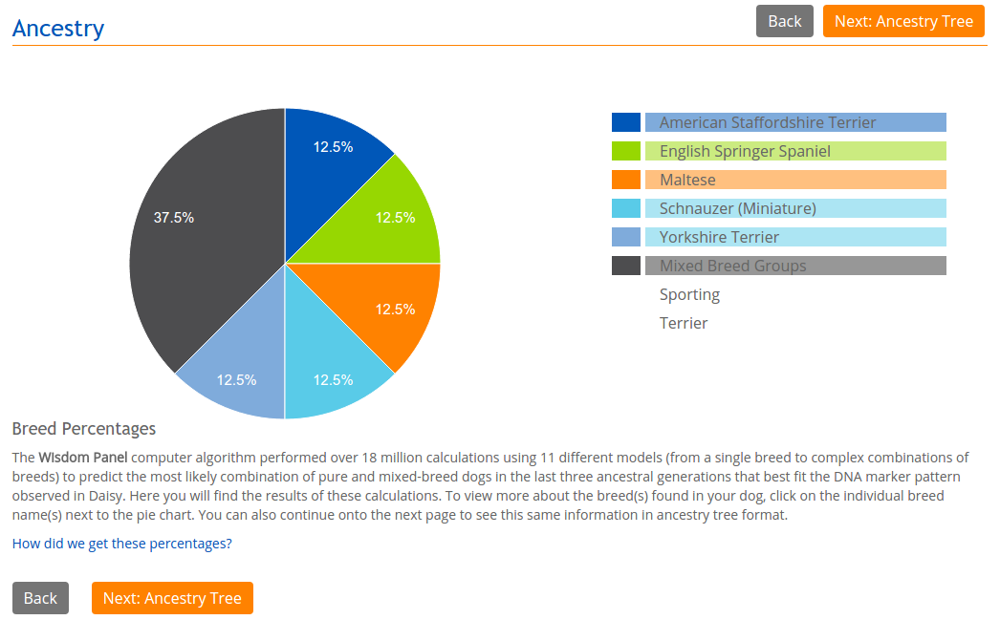
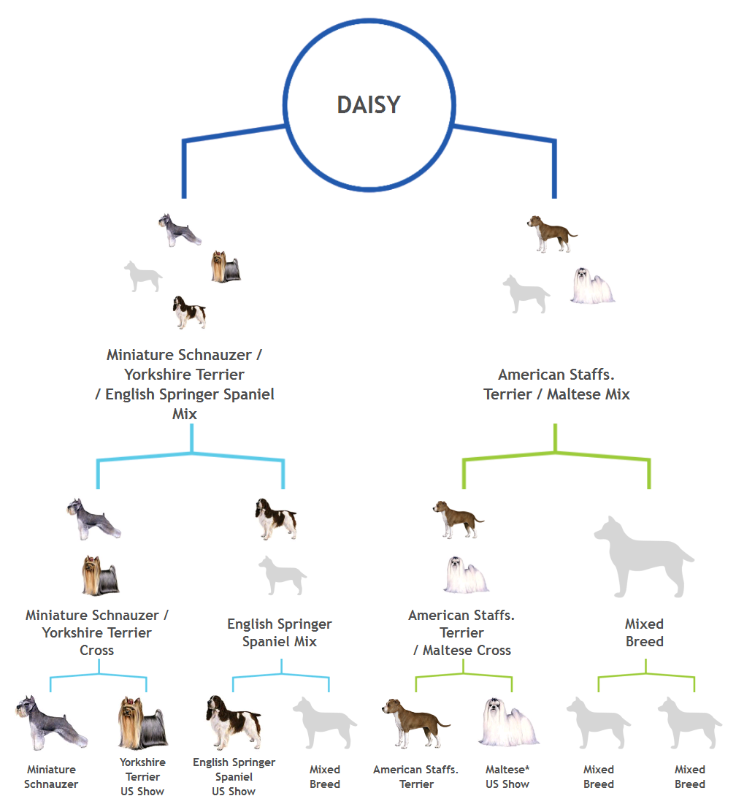
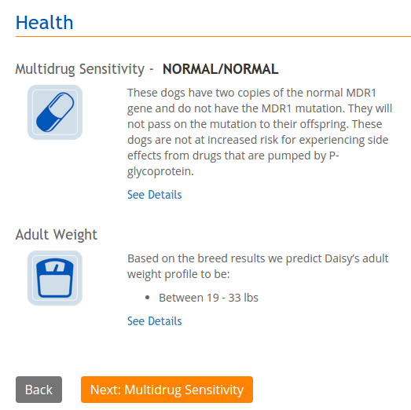

A few months ago, I adopted a dog who was listed on Craigslist as a "Yorkie Mix." The vet and I both thought she was some sort of Yorkie/Dachshund mix, but I was too curious so I ordered the Wisdom Panel 3.0 DNA test to actually find out what breed she is. The test will point out all the purebred breeds in your dog's ancestry, up to three generations ago. I found a kit on Amazon for about $70.
Collecting the actual DNA sample was pretty easy. The kit included two DNA swabs (they looked like those floss picks with the spiky rubber ends), and I just had to swab the inside of Daisy's cheeks for 45 seconds each swab. Then I mailed the kit and waited two weeks for my results.
The results were surprising. Not only was there no dachshund in her breed results, but she's also 1/8 pit bull! The following is screenshots of her results. (Not included are descriptions of each breed).
First was a DNA string. I'm not sure what I would use this for, but it's pretty cool I guess.
Next was a pie chart of her different breeds. I was most surprised to see pit bull (American Staffordshire Terrier)! So technically my little dog who looks like a teddy bear isn't even allowed at my apartment (shh). The other breeds in her mix are pretty interesting too. She doesn't really look a whole lot like any one of those breeds, except Yorkie. 3/8 of Daisy's ancestry is mixed, but they detected terrier/sport breeds.
This is Daisy's ancestry tree. It's interesting that only some of her great-grandparents are purebred, and some of them are still mixes. The Maltese-Pit pairing is also unusual!
Next is a health section, which I was also interested in. Fortunately, she is normal for multidrug sensitivity. The weight prediction is interesting because it predicted 19-33 pounds, and Daisy is around 18 pounds. However, with 3/8 of her ancestry too mixed to be detected, I'm still impressed they guessed it pretty closely.
Overall, I was very happy with the Wisdom Panel 3.0 test. I even got a coupon for $15 off my next test! I think the results are pretty accurate, because Daisy is definitely a terrier, and she's also pretty sporty judging by how she runs around my apartment, jumps completely over my couch, and is crazy about fetching her little stuffed raccoon. I would definitely recommend it!
Questions? Comments? Don't hesitate to contact me!